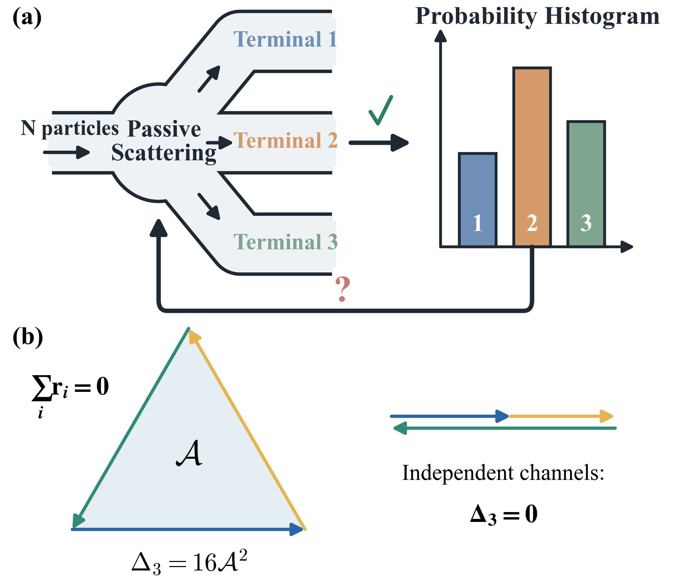
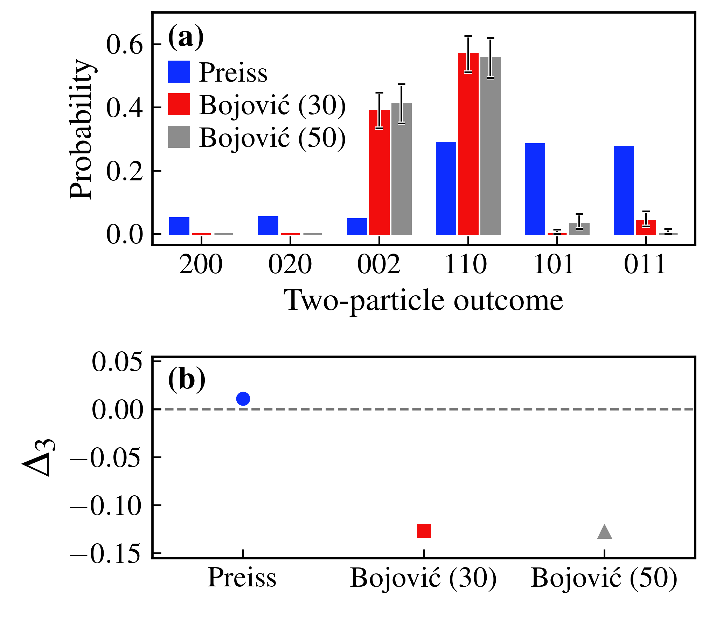

The authors state that the paper's mathematical proofs on three-terminal fermion counting bounds were formally verified in the Lean theorem prover.
Abstract
Quantum scattering is a fundamental probe of the scattering region and the quantum dynamics of outgoing particles. In two terminals, the statistics of non-interacting fermions is described by a generalized binomial distribution, that arises from the Pauli exclusion principle, while deviations are a signature of interactions. In this work, we extend this result to a scattering region coupled to three outgoing terminals (or channels), obtaining exact bounds for the statistics of the outgoing fermions. In particular, for two fermions and three terminals, four inequalities involving six measured probabilities determine whether a non-interacting scatterer can explain the observed statistics. Applying these inequalities to recent scattering experiments in cold atoms, we are able to identify a regime where interactions have a significant contribution on the outgoing particles. Therefore, our work opens up the possibility of identifying fermion interactions at the nanoscale in systems that range from mesoscopic conductors to optical traps in cold atoms.
Problem
For non-interacting fermions scattered into two terminals, counting statistics follow a generalized binomial distribution. Exact criteria were lacking for deciding whether three-terminal counting statistics can come from a non-interacting one-body scatterer.
Approach
The joint occupation histogram is encoded in a generating polynomial, written as a determinant of a linear combination of matrices. A theorem characterizes one-body realizability through real stability of this polynomial. For two fermions in three terminals, this reduces to four inequalities on six measured probabilities. The authors state the proofs were formally verified in Lean.

Figure 1: Three-terminal fermion counting and two-particle geometry. (a) A fixed, number conserving one body scatterer maps an N -fermion Slater input onto three orthogonal detection terminals, producing a joint occupation histogram. Our theorem proves such a histogram admits a fixed one body realization if and only if its generating polynomial is real stable. (b) For two fermions in a one-body re
Results
Four explicit inequalities determine when two-fermion, three-terminal statistics are compatible with a non-interacting scatterer. Applying them to cold-atom scattering experiments identifies a regime where interactions contribute significantly.

Figure 2: Counting probabilities and three-terminal criterion values. (a) Probabilities of the six outcomes (n_{1},n_{2},n_{3}) , where n_{i} denotes the particle count in terminal i . Blue denotes Ref. [ 49 ] ; red and gray denote the datasets from Ref. [ 50 ] at x=30 and 50 , respectively. The Ref. [ 49 ] probabilities are reconstructed from the published correlation image. Error bars show the p